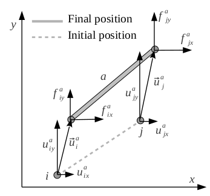
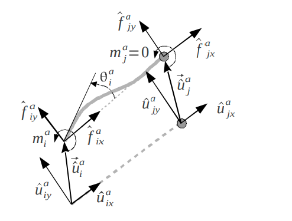
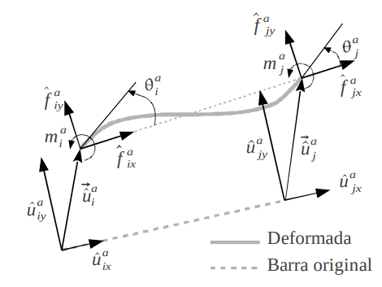
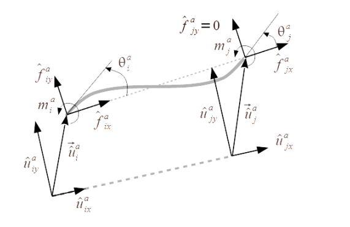
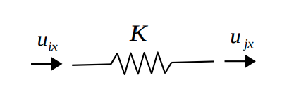
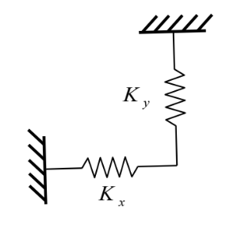
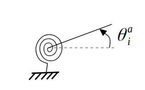
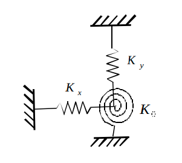

Implemented finite elements
Type names are the strings that must be used in the elements section of a YAML definition file (see Problem definition file format).
Parameters for each element may be defined on a per-element basis,
or by means of a beam_sections YAML entry to reuse sets of
parameters for several elements.
Note that defining more parameters than the minimum required ones
is not an error,
e.g. you can define Iz for a BEAM2D_AA and it
will neither be used nor an error triggered.
1. Rod 2D element (truss)
{kind=link}
A planar (XY) rod element capable of axial stress only.
Type name:
BEAM2D_AANumber of nodes: 2
Required parameters:
E: Young elasticity module.A: Section area.
Local-coordinates stiffness matrices
![\begin{equation*}
\hat{\mathbf{K}}_{ii} = \hat{\mathbf{K}}_{jj} =
\begin{blockarray}{ccccccc}
x & y & z & r_x & r_y & r_z \\
\begin{block}{(cccccc)c}
EA/L & 0 & 0 & 0 & 0 & 0 & x \\
0 & 0 & 0 & 0 & 0 & 0 & y \\
0 & 0 & 0 & 0 & 0 & 0 & z \\
0 & 0 & 0 & 0 & 0 & 0 & r_x \\
0 & 0 & 0 & 0 & 0 & 0 & r_y \\
0 & 0 & 0 & 0 & 0 & 0 & r_z \\
\end{block}
\end{blockarray}
\end{equation*}
\begin{equation*}
\hat{\mathbf{K}}_{ij} =
\begin{blockarray}{ccccccc}
x & y & z & r_x & r_y & r_z \\
\begin{block}{(cccccc)c}
-EA/L & 0 & 0 & 0 & 0 & 0 & x \\
0 & 0 & 0 & 0 & 0 & 0 & y \\
0 & 0 & 0 & 0 & 0 & 0 & z \\
0 & 0 & 0 & 0 & 0 & 0 & r_x \\
0 & 0 & 0 & 0 & 0 & 0 & r_y \\
0 & 0 & 0 & 0 & 0 & 0 & r_z \\
\end{block}
\end{blockarray}
\end{equation*}](_images/math/996ad658e2d15973292d1304f32ed13a7cea8d50.png)
1. Single-pinned 2D element (beam)
{kind=link}
A planar (XY) beam element with one pinned end (no bending moment) and one rigid end (with bending moment). Two names exist for this element for convenience of users, depending on which which node (the first or the second listed node) is the pinned one.
Type name:
BEAM2D_AR(first node is pinned),BEAM2D_RA(second node is pinned)Number of nodes: 2
Required parameters:
E: Young elasticity module.A: Section area.Iz: Second moment of inertia in the Z axis.
3. 2D beam element
{kind=link}
A planar (XY) beam element with both ends able to transmit bending moment.
Type name:
BEAM2D_RRNumber of nodes: 2
Required parameters:
E: Young elasticity module.A: Section area.Iz: Second moment of inertia in the Z axis.
4. 2D beam element with slider
{kind=link}
A planar (XY) beam element with both ends able to transmit bending moment, and second node free to slide on the local Y axis.
Type name:
BEAM2D_RDNumber of nodes: 2
Required parameters:
E: Young elasticity module.A: Section area.Iz: Second moment of inertia in the Z axis.
5. Linear spring
{kind=link}
A spring element in the local X direction between two given nodes.
Type name:
SPRING_1DNumber of nodes: 2
Required parameters:
K: Stiffness constant.
6. Two linear springs
{kind=link}
A spring element with two elastic components in the local X and Y directions between two given nodes. The picture shows one node being the ground but it can be any other problem node too.
Type name:
SPRING_XYNumber of nodes: 2
Required parameters:
Kx: Stiffness constant in X.Ky: Stiffness constant in Y.
7. Torsion spring
{kind=link}
A torsion spring element in the rotation Z axis between two given nodes.
Type name:
SPRING_TORSIONNumber of nodes: 2
Required parameters:
K: Torsional stiffness constant in Z.
8. All 2D degrees-of-freedom spring
{kind=link}
Two linear and one torsion spring element between two given nodes.
Type name:
SPRING_DXDYRZNumber of nodes: 2
Required parameters:
Kx: Torsional stiffness constant in x.Ky: Torsional stiffness constant in y.KRz: Torsional stiffness constant in rotation around z.